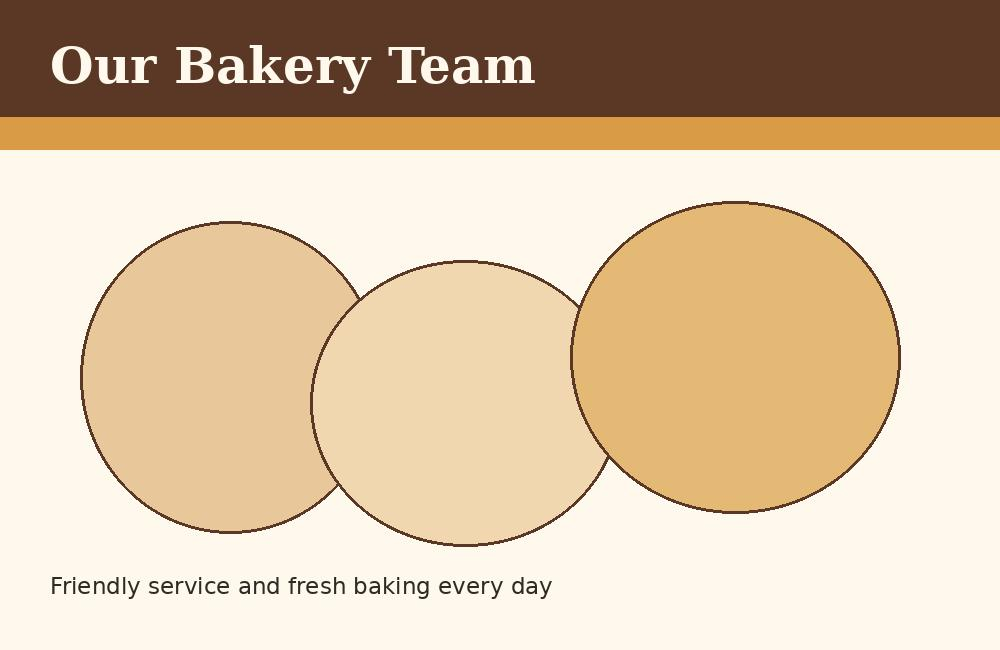

Our Story
North Star Bakery began with a simple goal: make fresh, handmade baked goods while creating a welcoming place for the community. What started with a small selection of breads and pastries has grown into a neighborhood bakery serving families, commuters, businesses, and event planners.

Our Sourcing Philosophy
We believe great baked goods begin with quality ingredients. Whenever possible, we work with local and regional suppliers and choose ingredients based on freshness, quality, and consistency.
Our Bakers
Our baking team starts early each morning preparing fresh breads and pastries for the day. Each baker brings experience and a shared commitment to quality.
Our Front Counter Team
Our front counter staff helps customers select products, arrange pre-orders, and choose baked goods for everyday meals and special occasions.